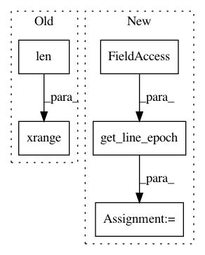

a3883f16c07fec39a0d7431a16cf018f67723f1d,w3af/core/controllers/profiling/scan_log_analysis.py,,show_timeout,#,198
Before Change
fig.set_x_limits(min_=0, max_=None)
fig.set_y_limits(min_=0, max_=None)
fig.plot(xrange(len(timeouts)),
timeouts,
label="Timeout")
After Change
timeouts.append(float(match.group(1)))
timeout_timestamps.append(get_line_epoch(line))
last_timestamp = get_line_epoch(line)
print("Socket timeout over time")
print("")
In pattern: SUPERPATTERN
Frequency: 3
Non-data size: 5
Instances
Project Name: andresriancho/w3af
Commit Name: a3883f16c07fec39a0d7431a16cf018f67723f1d
Time: 2018-01-10
Author: andres.riancho@gmail.com
File Name: w3af/core/controllers/profiling/scan_log_analysis.py
Class Name:
Method Name: show_timeout
Project Name: andresriancho/w3af
Commit Name: a3883f16c07fec39a0d7431a16cf018f67723f1d
Time: 2018-01-10
Author: andres.riancho@gmail.com
File Name: w3af/core/controllers/profiling/scan_log_analysis.py
Class Name:
Method Name: show_queue_size
Project Name: andresriancho/w3af
Commit Name: a3883f16c07fec39a0d7431a16cf018f67723f1d
Time: 2018-01-10
Author: andres.riancho@gmail.com
File Name: w3af/core/controllers/profiling/scan_log_analysis.py
Class Name:
Method Name: show_worker_pool_size